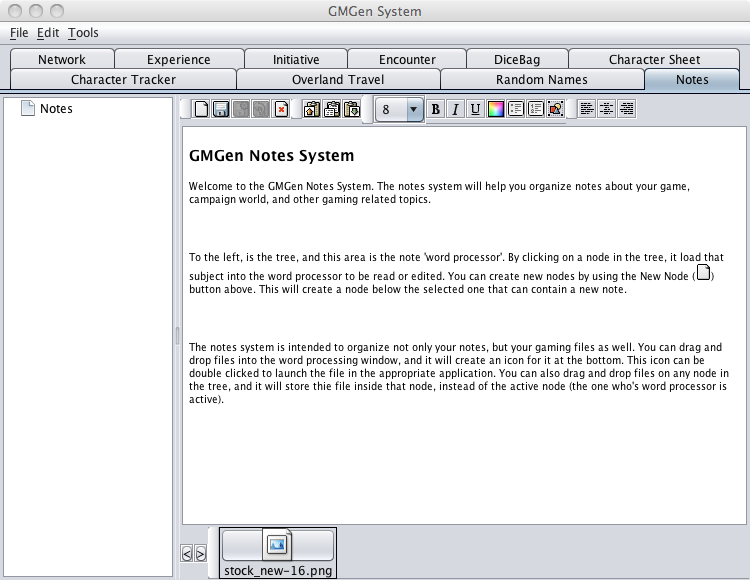
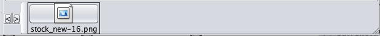

The notes system will help you organize notes about your game, campaign world, and other gaming related topics.

To the left, is the tree, and to the right is the note 'word processor'. By clicking on a node in the tree, it loads that subject into the word processor to be read or edited.
You can create new nodes by using the New Node button above. This will create a node below the selected one that can contain a new note. An asterisk (*) next to the name of a node indicates that the node has not been saved.
You can export a whole notes branch by clicking on a folder and then hitting export. It creates a .gmn file that can be loaded into another copy of GMGen Notes
The tools on the toolbar can be detached from the main window by clicking on the space to the left of the tool group. The detached tool group becomes a floating palette you can position to your liking and will remain in front of the GMGen window at all times. To reattach the palette click and drag the palette by the space to the left of the tools, when the palette is positioned over the toolbar it will be highlighted in red. Let go and the palette will nest itself back into the main window.
The notes system is intended to organize not only your notes, but your gaming files as well. You can drag and drop files into the word processing window, and it will create an icon for it at the bottom. This icon can be double clicked to launch the file in the appropriate application. You can also drag and drop files on any node in the tree, and it will store the file inside that node, instead of the active node (the one who's word processor is active). If the file you store is a GMGen related file (*.pcg, *.gmi, *.gmn, *.dbg) double clicking it launches it into the appropriate plugin.

By default GMGen notes and files are created and stored in the plugins/notes folder in PCGen. This can be changed to any directory you wish by setting a location in the GMGen Preferences.